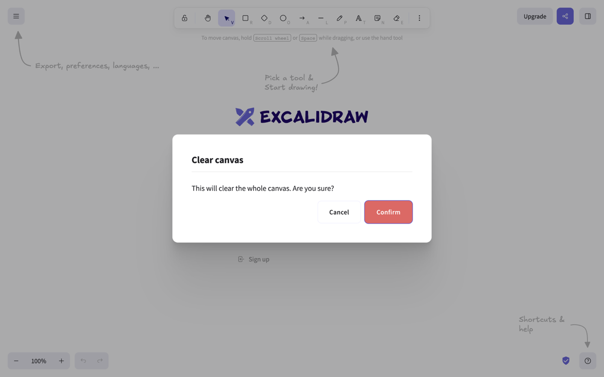
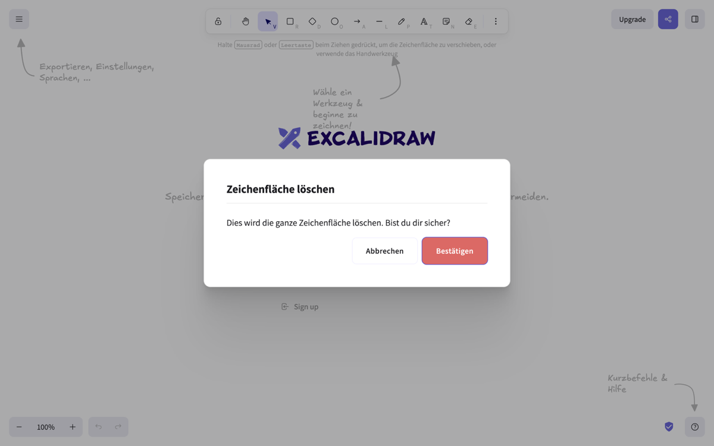
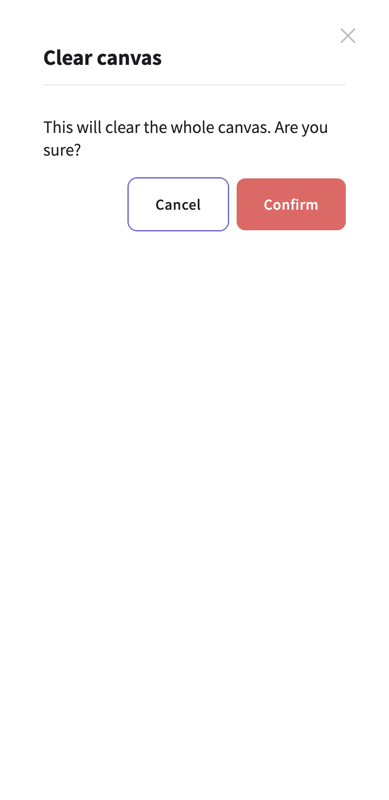
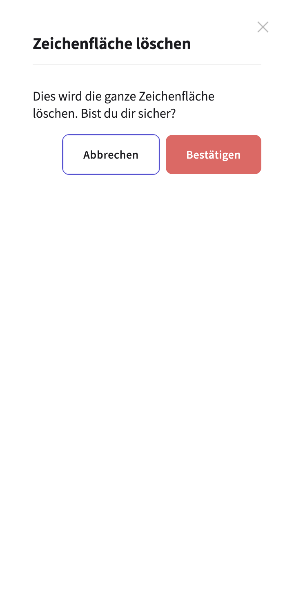
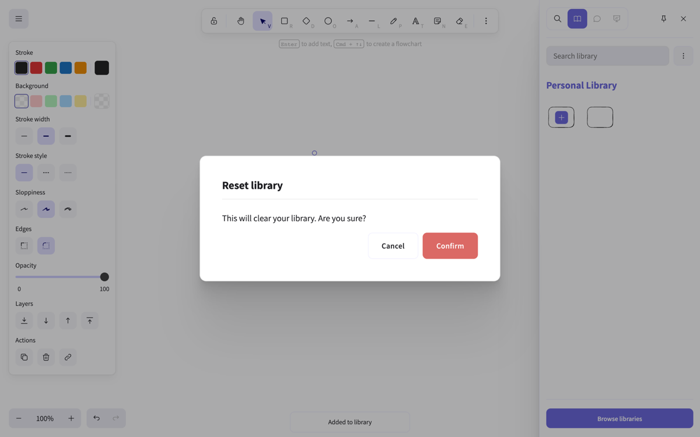

ConfirmDialog: every instance and state, EN and DE
Rendered from the live app at excalidraw.com on 2026-10-03, driven by capture.mjs. Source read from github.com/excalidraw/excalidraw at commit ed10ac7. German is the repo's own de-DE.json. States 2, 3 and 4 use sample, not from the code: library items (rectangles) that the capture scripts add to the library during the run.
1. Clear canvas · ActiveConfirmDialog.tsx:22 · triggers: main menu (DefaultItems.tsx:226), command palette (CommandPalette.tsx:399), Cmd+Delete (App.tsx:5563)

EN · desktop 1280px

DE · desktop 1280px

EN · 360px wide (dialog goes full screen)

DE · 360px wide
2. Reset library (no items selected) · LibraryMenuHeaderContent.tsx:65, :68, :70

EN · desktop · library has 1 item, none selected · sample, not from the code